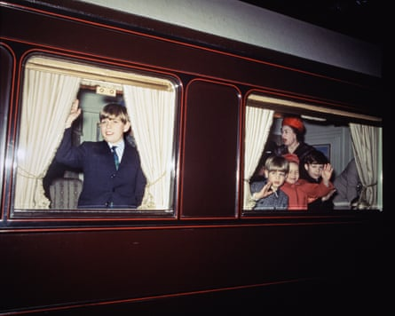
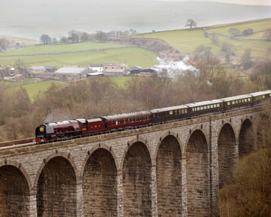

The royal family’s private “royal train” will be decommissioned as part of King Charles’s drive to modernise the monarchy and reduce costs.
The train has been used to transport members of the royal family around Britain’s railway network since 1840, but it has become increasingly costly to maintain and store. Rolling stock from the 1980s would need to be updated for modern railway networks, and two new more fuel-efficient helicopters offer a suitable alternative.
James Chalmers, the keeper of the privy purse, said: “The royal train, of course, has been part of national life for many decades, loved and cared for by all those involved. But in moving forward we must not be bound by the past.
“Just as so many parts of the royal household’s work have been modernised and adapted to reflect the world of today, so too the time has come to bid the fondest of farewells as we seek to be disciplined and forward in our allocation of funding.”
Chalmers said a search was under way for a long-term home for the train’s historic parts.
Prince Andrew waving from a window at left, with Queen Elizabeth II, Prince Edward, Lady Sarah Chatto and Viscount Linley in another window of the royal train at right, circa December 1965.Photograph: Fox Photos/Getty Images
The annual royal accounts for 2024-25, published on Monday, show that the sovereign grant, which is distributed by the Treasury to fund the official duties of the royal family, will remain at £86.3m for a fourth consecutive year.
The grant will increase to £132m annually between 2025 and 2027. This is partly to take advantage of record offshore windfarm profits for the crown estate, which hit £1.1bn in the last financial year, and also to cover the remaining £100m costs for the final two years of Buckingham Palace’s £369m, 10-year refurbishment.
The accounts also show that royal travel costs increased by £500,000 to £4.7m and payroll costs were up £2m to £29.9m.
There was an increase in the number of travel journeys costing over £17,000, from 24 in 2023-24 to 43 in 2024-45, reaching a total expenditure of £2.7m. Travel costs for the king and queen’s state visit to Samoa cost £401,000 in public money.
As part of a sustainability drive, one of the royal Bentleys is now powered by biofuels, with the other due to transition this year, and a move to electric vehicles is under consideration.
The Duchess of Sutherland hauling the royal train across Smardale viaduct near Kirkby Stephen, Cumbria in 2005.Photograph: Don McPhee/The Guardian
Separate accounts also published on Monday reveal that the duchy of Cornwall, which provides Prince William with a private income of nearly £23m a year, will waive rents for grassroots groups such as wildlife trusts and the St Petrocs homelessness shelter, and reduce rent for local charities by 50%.
This follows a Channel 4 Dispatches and Sunday Times investigation last November into the prince’s duchy and the duchy of Lancaster estate, which found that the estates had secured rental agreements worth millions of pounds with the armed forces, the NHS and state schools.
Will Bax, the duchy of Cornwall’s new secretary and keeper of records, said the duchy was also looking at including schools in the community groups that would be eligible for the rent waiver. Commercial relationships with public bodies such as the Ministry of Defence and the Ministry of Justice will not change.
Bax said: “It would be remiss not to address the media scrutiny the duchy has experienced this past year. We’ve used these challenges as an opportunity to stop and reflect. Both the duke and I are clear that we want the duchy to be world-class in our approach to supporting people, communities and nature to flourish, and to realise that aim we must operate and communicate in a modern, socially minded way.
“It’s clear we’ve entered an era of deep change, but we change not because we disrespect our past but precisely because we do respect it.”
The accounts show the duchy generated profits of £22.9m, down £700,000 from £23.6m in the previous financial year.
The annual review for the Prince of Wales omits his income, expenditure and tax payments, a move away from the transparency implemented by Charles as the previous Prince of Wales.